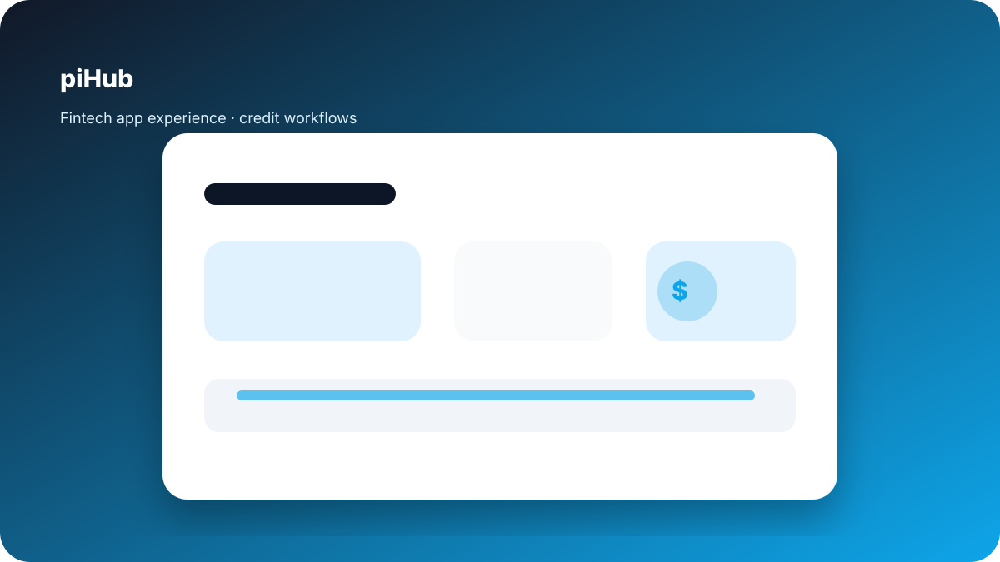

piHub
Worked on fintech app experience around creditor, investor, and admin workflows. The project focused on product applications, credit requests, verification, profile management, and finance-product interface clarity.

Role
Product / App Experience
Domain
Fintech / CreditTech
Focus
Trust, verification, workflow clarity
What I worked on
- Creditor, investor, and admin workflow understanding.
- UX thinking around protected routes, verification states, and account status.
- Product application and credit request clarity.
- Profile, notification, and authenticated app experience considerations.
- Fintech interface concerns such as trust, clear labels, and error prevention.
Because the original repository credits other initial authors, this project is framed carefully around app experience and product context instead of claiming original development ownership.
Resources
Prototype Links
Explore the creditor, investor, and admin prototypes connected to the piHub app experience.